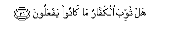

Sacred Texts Islam Index
Hypertext Qur'an Unicode Palmer Pickthall Yusuf Ali English Rodwell
Sūra LXXXIII.: Taṭfīf, or Dealing in Fraud. Index
Previous Next

The Holy Quran, tr. by Yusuf Ali, [1934], at sacred-texts.com
Sūra LXXXIII.: Taṭfīf, or Dealing in Fraud.
Section 1
1. Woe to those
That deal in fraud,—
2. Allatheena itha iktaloo AAala alnnasi yastawfoona
2. Those who, when they
Have to receive by measure
From men, exact full measure,
3. Wa-itha kaloohum aw wazanoohum yukhsiroona
3. But when they have
To give by measure
Or weight to men,
Give less than due.
4. Ala yathunnu ola-ika annahum mabAAoothoona
4. Do they not think
That they will be called
To account?—
5. On a Mighty Day,
6. Yawma yaqoomu alnnasu lirabbi alAAalameena
6. A Day when (all) mankind
Will stand before
The Lord of the Worlds?
7. Kalla inna kitaba alfujjari lafee sijjeenin
7. Nay! Surely the Record
Of the Wicked is
(Preserved) in Sijjīn.
8. And what will explain
To thee what Sijjīn is?
9. (There is) a Register
(Fully) inscribed.
10. Waylun yawma-ithin lilmukaththibeena
10. Woe, that Day, to those
That deny—
11. Allatheena yukaththiboona biyawmi alddeeni
11. Those that deny
The Day of Judgment.
12. Wama yukaththibu bihi illa kullu muAAtadin atheemin
12. And none can deny it
But the Transgressor
Beyond bounds,
The Sinner!
13. Itha tutla AAalayhi ayatuna qala asateeru al-awwaleena
13. When Our Signs are rehearsed
To him, he says,
"Tales of the Ancients!"
14. Kalla bal rana AAala quloobihim ma kanoo yaksiboona
14. By no means!
But on their hearts
Is the stain of the (ill)
Which they do!
15. Kalla innahum AAan rabbihim yawma-ithin lamahjooboona
15. Verily, from (the Light
Of) their Lord, that Day,
Will they be veiled.
16. Thumma innahum lasaloo aljaheemi
16. Further, they will enter
The Fire of Hell.
17. Thumma yuqalu hatha allathee kuntum bihi tukaththiboona
17. Further, it will be said
To them: "This is
The (reality) which ye
Rejected as false!
18. Kalla inna kitaba al-abrari lafee AAilliyyeena
18. Nay, verily the Record
Of the Righteous is
(Preserved) in ‘Illīyīn.
19. Wama adraka ma AAilliyyoona
19. And what will explain
To thee what ‘Illīyīn is?
20. (There is) a Register
(Fully) inscribed,
21. To which bear witness
Those Nearest (to God),
22. Inna al-abrara lafee naAAeemin
22. Truly the Righteous
Will be in Bliss:
23. AAala al-ara-iki yanthuroona
23. On Thrones (of Dignity)
Will they command a sight
(Of all things):
24. TaAArifu fee wujoohihim nadrata alnnaAAeemi
24. Thou wilt recognise
In their Faces
The beaming brightness of Bliss.
25. Yusqawna min raheeqin makhtoomin
25. Their thirst will be slaked
With Pure Wine sealed:
26. Khitamuhu miskun wafee thalika falyatanafasi almutanafisoona
26. The seal thereof will be
Musk: and for this
Let those aspire,
Who have aspirations:
27. With it will be (given)
A mixture of Tasnīm:
28. AAaynan yashrabu biha almuqarraboona
28. A spring, from (the waters)
Whereof drink
Those Nearest to God.
29. Inna allatheena ajramoo kanoo mina allatheena amanoo yadhakoona
29. Those in sin used
To laugh at those
Who believed,
30. Wa-itha marroo bihim yataghamazoona
30. And whenever they passed
By them, used to wink
At each other (in mockery);
31. Wa-itha inqalaboo ila ahlihimu inqalaboo fakiheena
31. And when they returned
To their own people,
They would return jesting;
32. Wa-itha raawhum qaloo inna haola-i ladalloona
32. And whenever they saw them,
They would say, "Behold!
These are the people
Truly astray!"
33. Wama orsiloo AAalayhim hafitheena
33. But they had not been
Sent as Keepers over them!
34. Faalyawma allatheena amanoo mina alkuffari yadhakoona
34. But on this Day
The Believers will laugh
At the Unbelievers:
35. AAala al-ara-iki yanthuroona
35. On Thrones (of Dignity)
They will command (a sight)
(Of all things),

36. Hal thuwwiba alkuffaru ma kanoo yafAAaloona
36. Will not the Unbelievers
Have been paid back
For what they did?